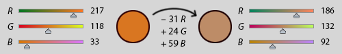
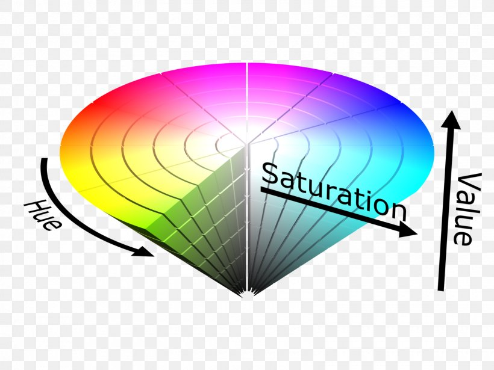
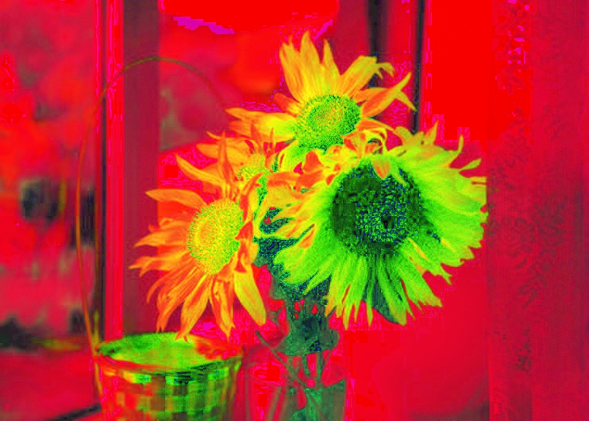
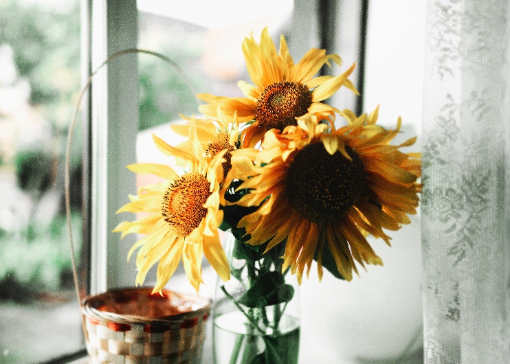
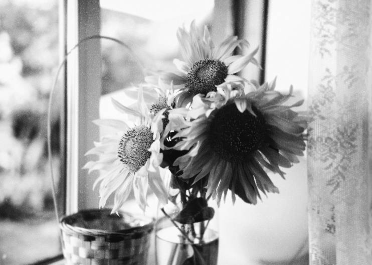
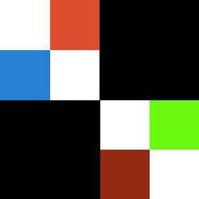
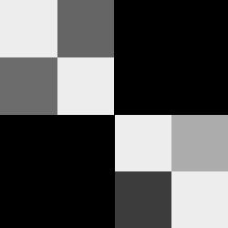

In this post, another basic image operation is explored - Colour conversion.
This post is split into four sections:
- The Basic Principles of Colour Conversion
- Details of RGB2GRAY and RGB2HSV Functions and Their Inverse Functions
- Practice with OpenCV in Python
- Build RGB2GRAY and RGB2HSV Functions and Their Inverse Functions From Scratch
OpenCV code: https://github.com/BillMaZengou/cv_basis -> colour.py; gray.py (My RGB2GRAY, display using OpenCV)
Re-implementation code: https://github.com/BillMaZengou/cv_basis/my_opencv -> grey.py (My RGB2GRAY)
The Basic Principles of Colour Conversion
Greyscale
A greyscale image is one in which the value of each pixel represents an amount of light. In other words, it carries only intensity information. The contrast ranges from black at the weakest intensity to white at the strongest.
Although the conversion from RGB to grey image can easily be done, sadly there is no simple explanation. Compare the following images
The second one was obtained by averaging RGB channels. The third one was obtained using OpenCV standard, which will be introduced in later sessions.
The goal of the conversion is to find the balance point between human perception and computational ease.
Perceptual Luminance-preserving Conversion to Greyscale
The best conversion should provide the greyscale image with the same luminance as the original colour image. Details can conduct (Grayscale, 2020, https://en.wikipedia.org/wiki/Grayscale).
In standard,
\[
Y_{linear} = 0.2126 R_{linear} + 0.7152 G_{linear} + 0.0722 B_{linear},
\]
where \(Y_{linear}\) denotes linear luminance, and \(R_{linear}\), \(G_{linear}\) and \(B_{linear}\) represent linear luminance of each colour channel respectively. These three coefficients are the intensity perception of a normal person with the definition of sRGB.
Human vision is most sensitive to green, so this has the greatest coefficient value (0.7152), and least sensitive to blue, so this has the smallest coefficient (0.0722).
However, for a typical RGB image, the colour channels do not store linear luminance. The RGB values are gamma-compressed. Details are in (Gamma correction, 2020, https://en.wikipedia.org/wiki/Gamma_correction). To simplify, psychophysics suggested that human perception of physical quantities are non-linear. Empirically, it follows Stevens’s power law. Hence, if an image is made without power law, then we will feel unnatural since it will not match to our observation by eyes. Gamma compression is a correction to make the image fit to the power law.
Solving power equations are computationally expensive. Therefore, the RGB2GRAY operation in everyday life is merely an approximation.
HSV
Most of the digital displays produce colours by combining red, green, and blue light with various intensities. Red, green and blue are so-called RGB additive primary colours. The resulting mixtures in RGB colour space can reproduce a wide variety of colours called a gamut. Gamut, or colour gamut, is a complete subset of colours, shown below.
CIE 1931 xy chromaticity diagram showing the gamut of the sRGB colour space (the triangle). The outer curved boundary is the monochromatic spectrum with wavelengths shown in nanometers labeled in blue. This image is drawn using sRGB, so colours outside the triangle cannot be accurately coloured. The D65 white point is shown in the centre, and the Planckian locus is shown with colour temperatures labeled in kelvins. D65 is not an ideal 6500-kelvin blackbody because it is based on atmospheric filtered daylight.
The problem is that using RGB to generate colour is not intuitive. For example, as shown in the figure below, changing from one orange to a less saturated orange requires to modified RGB by different amounts.

In the mid-1970s Alvy Ray Smith described the HSV model for computer display technology to accommodate more intuitive colour mixing models. These models were useful because they were not only more intuitive than raw RGB values, but also the conversions to and from RGB were extremely fast to compute. They could run in real time on the hardware of the 1970s.

HSV stands for “hue, saturation, value”. The model can be shown in a cone. To make them simple,
Hue: The angle of a circle, which is the cross-section of the HSV cone. The degrees indicate different colours. By convention, Red is at \(0\), green is at \(120\), and blue is at \(240\).
Saturation: The radius of a circle, which is the cross-section of the HSV cone. The lengths indicate different colourfulness.
Value: The height of the HSV cone. The lengths indicate different brightness.
Details of Two Main Operations
RGB <–> Grey
The conversion from RGB to Grey image is
\[
Y = 0.299 R + 0.587 G + 0.114 B,
\]
where \(Y\) is the greyscale value, and \(R\), \(G\), \(B\) denotes RGB values for each channel respectively.
As mentioned previously, this equation is an approximation of the accurate conversion. The equation works for digital formats following Rec. 601 (i.e. most digital standard definition formats).
Note The \(Y\) is gamma compressed, thus we do not need to worry about the power law.
The conversion from Grey to RGB image is
\[
R = Y; G = Y; B = Y.
\]
This operation cannot produce a colourful image, but simply create a RGB image form.
RGB <–> HSV
In case of 8-bit and 16-bit images, RGB values are converted to the floating-point format and scaled to fit the 0 to 1 range.
\[
V = \max{(R, G, B)}
\]
\[
S = \frac{V - \min{(R, G, B)}}{V} \space \space \mbox{if } V \neq 0
\]
\[
S = 0 \space \space \mbox{if } V = 0
\]
\[
H = \frac{60(G - B)}{V - \min{(R, G, B)}} \space \space \mbox{if } V = R
\]
\[
H = 120 + \frac{60(B - R)}{V - \min{(R, G, B)}} \space \space \mbox{if } V = G
\]
\[
H = 240 + \frac{60(R - G)}{V - \min{(R, G, B)}} \space \space \mbox{if } V = B
\]
If \(H < 0\) then \(H = H + 360\). The output \(0 \leqslant V \leqslant 1\), \(0 \leqslant S \leqslant 1\), \(0 \leqslant H \leqslant 360\).
The final output of the HSV format depends on the image data types. By default, CV_32F is output.
CV_8U: \(V = 255V\), \(S = 255S\), \(H = H/2\)
CV_16U: \(V = -65535V\), \(S = -65535S\), \(H = -H\) (currently not supported)
Practice with OpenCV in Python
Documentation
In OpenCV, a general function takes care of all colour conversions.
dst = cv2.cvtColor(src, code[, dst[, dstCn]])src -> (compulsory) Source image. 8-bit unsigned (CV_8U), 16-bit unsigned (CV_16U), or single-precision floating-point (CV_32F).
dst -> Destination image.
code -> (compulsory) colour space conversion code.
dstCn -> (optional) number of channels in the destination image. If it is \(0\), dstCn is derived automatically from src and code.
Note The default colour format in OpenCV is actually BGR!!
The conventional range for RGB channel values are:
\(0\) to \(255\) for CV_8U
\(0\) to \(65535\) for CV_16U
\(0\) to \(1\) for CV_32F
For linear transformation, the range does not matter. But it does for non-linear transformation.
The code that we care about are CV_BGR2GRAY, CV_GRAY2BGR, CV_BGR2HSV and CV_HSV2BGR.
Implementation
RGB <–> Grey
import cv2
name = image_name
img = cv2.imread('./{}.jpg'.format(name), cv2.IMREAD_UNCHANGED)
cv2.imshow("Original image", img)
bgr2grey = cv2.cvtColor(img, cv2.COLOR_BGR2GRAY)
grey2bgr = cv2.cvtColor(bgr2grey, cv2.COLOR_GRAY2BGR)
cv2.imshow("BGR to Grey image", bgr2grey)
cv2.imshow("Grey to RGB image", grey2bgr)
print(bgr2grey.shape)
print(grey2bgr.shape)
cv2.waitKey(0)
cv2.destroyAllWindows()Example results are shown below:
The original image (From Image Processing1 post)
RGB_to_Grey
Grey_to_RGB
Note The Grey_to_RGB cannot recover the original image as expected. The information of RGB values has lost. The reason of using this function is to change the dimension of the grey image.
In our case, RGB_to_Grey has dimension \((530 \times 742)\), but Grey_to_RGB has dimension \((530 \times 742 \times 3)\).
RGB <–> HSV
import cv2
name = image_name
img = cv2.imread('./{}.jpg'.format(name), cv2.IMREAD_UNCHANGED)
cv2.imshow("Original image", img)
bgr2hsv = cv2.cvtColor(img, cv2.COLOR_RGB2HSV)
hsv2bgr = cv2.cvtColor(bgr2hsv, cv2.COLOR_HSV2BGR)
cv2.imshow("RGB to HSV image", bgr2hsv)
cv2.imshow("HSV to RGB image", hsv2bgr)
cv2.waitKey(0)
cv2.destroyAllWindows()Example results are shown below:
RGB_to_HSV

HSV_to_RGB

Note The unnatural colour of the RGB_to_HSV is ascribed to the fact that we use RGB to display HSV. HSV_to_RGB recover the original image as expected.
Build RGB2GRAY and RGB2HSV Functions From Scratch
RGB2GRAY
import numpy as np
def bgr_to_gray(img):
cols, rows, channels = img.shape
gray = np.zeros((cols, rows))
b = img[:, :, 0]
g = img[:, :, 1]
r = img[:, :, 2]
gray[:, :] = 0.229*r + 0.587*g + 0.114*b
return grayThe output is shown as below.
My function

OpenCV
More example:
Color Image

Greyscale Image

Note Some techniques can be applied to avoid floating point calculations.
GRAY2RGB
def grey_to_rgb(img):
if len(img.shape) != 2:
print("Input should be a greyscale image")
else:
dst = np.zeros((img.shape[0], img.shape[1], 3))
dst[:, :, 0] = img[:, :]
dst[:, :, 1] = img[:, :]
dst[:, :, 2] = img[:, :]
return dstRGB2HSV(TODO)
Acknowledgement
The creation of this post is inspired by Datawhale.
Reference
- Photo by Viktor Mogilat on Unsplash.
- Smith, A.R., 1978. Color gamut transform pairs. ACM Siggraph Computer Graphics, 12(3), pp.12-19.
- En.wikipedia.org. 2020. SRGB. [online] Available at: https://en.wikipedia.org/wiki/SRGB [Accessed 24 April 2020].
- En.wikipedia.org. 2020. HSL And HSV. [online] Available at: https://en.wikipedia.org/wiki/HSL_and_HSV#cite_ref-Smith_13-1 [Accessed 24 April 2020].
- Blog.csdn.net. 2020. 色彩转换系列之RGB格式与HSV格式互转原理及实现_人工智能_小武的博客-CSDN博客. [online] Available at: https://blog.csdn.net/weixin_40647819/article/details/92660320 [Accessed 24 April 2020].
- Docs.opencv.org. 2020. Miscellaneous Image Transformations — Opencv 2.4.13.7 Documentation. [online] Available at: https://docs.opencv.org/2.4/modules/imgproc/doc/miscellaneous_transformations.html [Accessed 24 April 2020].
- Photo by Omid Armin on Unsplash
- Docs.opencv.org. 2020. Opencv: Color Conversions. [online] Available at: https://docs.opencv.org/3.1.0/de/d25/imgproc_color_conversions.html [Accessed 24 April 2020].
- Tutorialspoint.com. 2020. Grayscale To RGB Conversion - Tutorialspoint. [online] Available at: https://www.tutorialspoint.com/dip/grayscale_to_rgb_conversion.htm [Accessed 24 April 2020].
- En.wikipedia.org. 2020. Grayscale. [online] Available at: https://en.wikipedia.org/wiki/Grayscale [Accessed 24 April 2020].
- En.wikipedia.org. 2020. Gamma Correction. [online] Available at: https://en.wikipedia.org/wiki/Gamma_correction [Accessed 24 April 2020].
- Stevens, S.S., 1957. On the psychophysical law. Psychological review, 64(3), p.153.